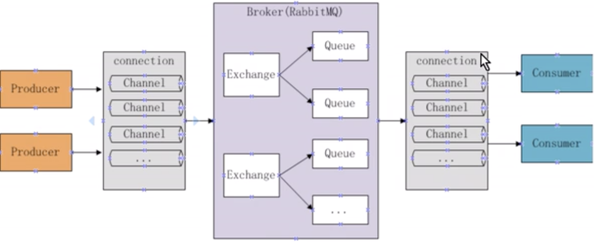

RabbitMq的工作模式
阅读
发表于：2019年8月7日
RabbitMq简介
MQ全称为Message Queue，即消息队列，RabbitMQ是由erlang语言开发，基于AMQP（Advanced Message Queue）高级消息队列协议实现的，它是一种应用程序之间的通信方法，消息队列在分布式系统开发中应用非常广泛。
应用场景：
- 任务异步处理
将不需要同步处理并且耗时长的操作由消息队列通知消息接收方进行异步处理，提供应用程序的响应时间
- 应用程序解耦合
MQ相当于一个中介，生产方通过MQ与消费方交互，它将应用程序进行解耦合。
AMQP:是一套公开的消息队列协议，最早在2003年被提出，它从协议层定义消息通信数据的标准格式，为解决MQ市场协议不统一的总是。
RabbitMQ的工作原理

- Broker：消息队列服务进程，此进程包括两个部分Exchange和Queue
- Exchange：消息队列交换机，按一定的规则将消息路由转发到某个队列，对消息进行过滤
- Queue：消息队列，存储消息的队列，消息达到队列并转发给指定的消费方
- Producer：消息生产者，即生产方客户端，生产方客户端将消息发送到MQ
- Consumer：消息消费者，即消费方客户端，接收MQ转发的消息
RabbitMQ工作模式
RabbitMQ拥有6种工作模式。
工作队列 Work queues
一个消息只能被一个消费者接收到
工作队列是指一个生产者，多个消费端共同消费同一个队列中的消息，具有如下特点：
- 一个生产者将消息发给一个队列
- 多个消费者共同监听一个队列的消息
- 消息不能被重复消费
- rabbit采用轮询的方式将消息平均发送给消费者
发布订阅 publish/subscribe
一个消息可以被多个消费者接收到
发布订阅模式下
- 一个生产者将消息发给交换机
- 与交换机绑定的有多个队列，每个消息者监听自己的队列
- 生产者将消息发给交换机，由交换机将消息转发到此交换机的每个队列，每个绑定交换机的队列都将接收到消息
- 如果消息发送给没有绑定队列的交换机上消息将丢失
工作队列与发布订阅的区别：
- 发布订阅可以定义一个交换机绑定多个队列，一个消息可以发送给多个队列
- 工作队列无需定义交换机，一个消息一次只能发送给一个队列
- 发布订阅比工作队列的功能更强大，发布订阅也可以将多个消息者监听同一个队列实现工作队列的功能
路由 routing
在路由模式下：
- 一个交换机绑定多个队列，每个队列设置routingkey，并且一个队列可以设置多个 routingkey
- 每个消费者监听自己的队列
- 生产将消息发给交换机，发送消息时需要指定routingkey的值，交换机来判断该routingkey的值和哪个队列的routingkey相行装，如果相等则将消息发给该队列。
路由模式比发布订阅模式更强大，可以通过路由模式来实现发布订阅模式。
通配符 topics
topics 模式：
- 一个交换机可以绑定多个队列，每个队列可以设置一个或多个带通配符的routingKey
- 生产者将消息发送给交换机，交换机根据routingkey的值来匹配队列，匹配时采用通配符方式，匹配成功的将消息转发到指定队列
routing和topics的区别：
基本原理是相同的，即：生产者将消息发给交换机，交换机根据routingkey将消息转发给routingkey匹配的队列，不同之外是：routingkey的匹配方式，routing模式是相等匹配，topics模式是通配符匹配。
通配符类型：
- #号：匹配一个或多个词（每个词中间以.分隔），比如：inform.#可以匹配inform.sms、inform.email、inform.email.sms
- *号：只能匹配一个词，比如inform.#可以匹配inform.sms、inform.email，但不能匹配inform.email.sms
header转发器 header
header模式与routing不同的地方在于，header模式取消了 routingkey, 使用header中的key/value（键值对）匹配队列。
案例：
根据用户的通知设置去通知用户，设置接收Email的用户只接收Email，设置接收sms的用户只接收sms，设置两种通知类型都接收的则两种都有效。
在生产者上队列和交换机的绑定是通过header进行绑定的。
|
|
在发通知的时候，需要指定header
|
|
远程过程调用 rpc
RPC即客户端远程调用服务端的方法，使用MQ可实现RPC的异步调用。基于Direct交换机实现。
- 客户端即是生产者也是消费者，向RPC请求队列发送RPC调用消息，同时监听RPC响应队列
- 服务端监听RPC请求队列的消息，收到消息后执行服务端的方法，得到方法返回的结果
- 服务端将RPC方法的结果发送到RPC响应队列